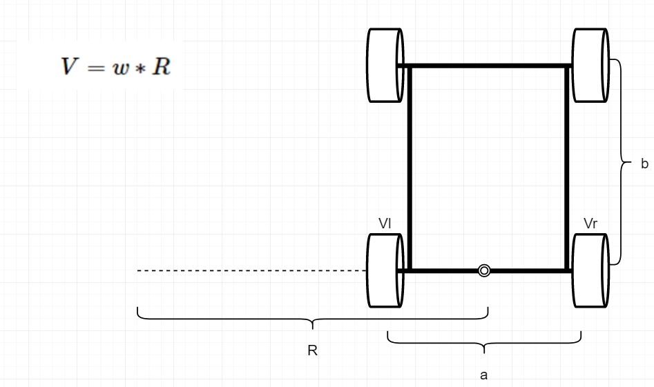
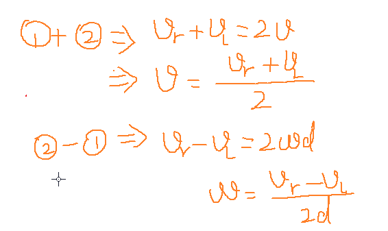

<!DOCTYPE lake>
<h1 data-lake-id="anCE7" id="anCE7"><span data-lake-id="u2891d372" id="u2891d372" style="color: rgba(0, 0, 0, 0.54)">差速两轮驱动</span><a data-lake-id="uc38db4cf" href="https://robot.czxy.com/docs/stm32/03_diff_2wd_driver/#_1" id="uc38db4cf" rel="noopener noreferrer" target="_blank"><span data-lake-id="u46ca8602" id="u46ca8602">¶</span></a></h1><p data-lake-id="ube283d44" id="ube283d44"><span class="lake-fontsize-14" data-lake-id="u131f0ddd" id="u131f0ddd" style="color: rgba(0, 0, 0, 0.87)">本章我们主要来给大家介绍差速两轮驱动结构.两轮差速转向结构,在学习这个内容之前我们需要理解一个公式:</span><span class="lake-fontsize-16" data-lake-id="u2481c3eb" id="u2481c3eb" style="color: rgba(0, 0, 0, 0.87)">V=ω⋅r</span></p><p data-lake-id="u751532e1" id="u751532e1"><span class="lake-fontsize-14" data-lake-id="u36006bac" id="u36006bac" style="color: rgba(0, 0, 0, 0.87)">由于小车是一个刚体,所以轮子的每个位置的角速度都是相同的, 而由于转弯半径不同,所以每个轮子的线速度会有所不同.</span></p><p data-lake-id="uce4311f5" id="uce4311f5"></p><h2 data-lake-id="aZwbc" id="aZwbc"><span data-lake-id="u536c1194" id="u536c1194" style="color: rgba(0, 0, 0, 0.87)">速度推导左右轮转速</span><a data-lake-id="u4576407c" href="https://robot.czxy.com/docs/stm32/03_diff_2wd_driver/#_2" id="u4576407c" rel="noopener noreferrer" target="_blank"><span data-lake-id="ube0410b2" id="ube0410b2">¶</span></a></h2><p data-lake-id="u508196a1" id="u508196a1"><span class="lake-fontsize-14" data-lake-id="uc50d3ce5" id="uc50d3ce5" style="color: rgba(0, 0, 0, 0.87)">已知线速度为V,角速度为:w 那么左右轮速度应该等于多少呢?</span></p><p data-lake-id="uaab5bba0" id="uaab5bba0"></p><h2 data-lake-id="dn3X4" id="dn3X4"><span data-lake-id="uab1553fd" id="uab1553fd" style="color: rgba(0, 0, 0, 0.87)">左右轮转速推导速度</span><a data-lake-id="u74343a13" href="https://robot.czxy.com/docs/stm32/03_diff_2wd_driver/#_3" id="u74343a13" rel="noopener noreferrer" target="_blank"><span data-lake-id="u40ad4d43" id="u40ad4d43">¶</span></a></h2><p data-lake-id="uc287969e" id="uc287969e"><span class="lake-fontsize-14" data-lake-id="u04f595f6" id="u04f595f6" style="color: rgba(0, 0, 0, 0.87)">已知左右轮的速度,我们推导当前小车前进的线速度和角速度</span></p><p data-lake-id="u8a900f4c" id="u8a900f4c"><span class="lake-fontsize-14" data-lake-id="u7c2fdb6d" id="u7c2fdb6d" style="color: rgba(0, 0, 0, 0.87)">小车线速度公式:</span></p><p data-lake-id="u72753e2f" id="u72753e2f"><span class="lake-fontsize-16" data-lake-id="ufbfa819f" id="ufbfa819f" style="color: rgba(0, 0, 0, 0.87)">v=（v</span><span class="lake-fontsize-12" data-lake-id="u7ba15881" id="u7ba15881" style="color: rgba(0, 0, 0, 0.87)">r</span><span class="lake-fontsize-16" data-lake-id="u4b05f98b" id="u4b05f98b" style="color: rgba(0, 0, 0, 0.87)">+v</span><span class="lake-fontsize-12" data-lake-id="uf1630505" id="uf1630505" style="color: rgba(0, 0, 0, 0.87)">l）/</span><span class="lake-fontsize-16" data-lake-id="u9e33bf17" id="u9e33bf17" style="color: rgba(0, 0, 0, 0.87)">2</span></p><p data-lake-id="ucfe5bfed" id="ucfe5bfed"><span class="lake-fontsize-14" data-lake-id="uee40419c" id="uee40419c" style="color: rgba(0, 0, 0, 0.87)">小车角速度公式:</span></p><p data-lake-id="ufa7ca379" id="ufa7ca379"><span class="lake-fontsize-16" data-lake-id="ub655070d" id="ub655070d" style="color: rgba(0, 0, 0, 0.87)">ω= （v</span><span class="lake-fontsize-12" data-lake-id="u7144be29" id="u7144be29" style="color: rgba(0, 0, 0, 0.87)">r</span><span class="lake-fontsize-16" data-lake-id="u6d9874d4" id="u6d9874d4" style="color: rgba(0, 0, 0, 0.87)">−v</span><span class="lake-fontsize-12" data-lake-id="u883a19f5" id="u883a19f5" style="color: rgba(0, 0, 0, 0.87)">l）/</span><span class="lake-fontsize-16" data-lake-id="u42d6021a" id="u42d6021a" style="color: rgba(0, 0, 0, 0.87)">2</span></p><p data-lake-id="uad0130e5" id="uad0130e5"><span class="lake-fontsize-14" data-lake-id="u538663f0" id="u538663f0" style="color: rgba(0, 0, 0, 0.87)">推演的过程如下:</span></p><p data-lake-id="u9d28d6af" id="u9d28d6af"></p><p data-lake-id="u10ddb96d" id="u10ddb96d"><span data-lake-id="u4b1b8134" id="u4b1b8134"><br/></span><span data-lake-id="u83001e60" id="u83001e60"> </span></p>